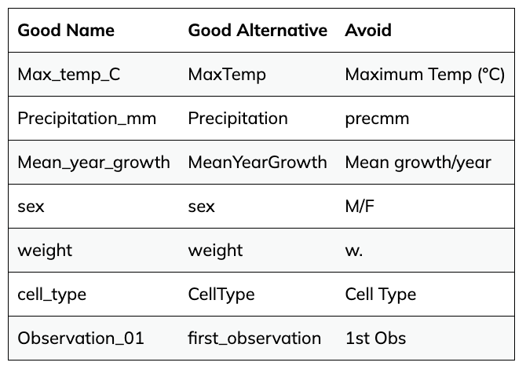
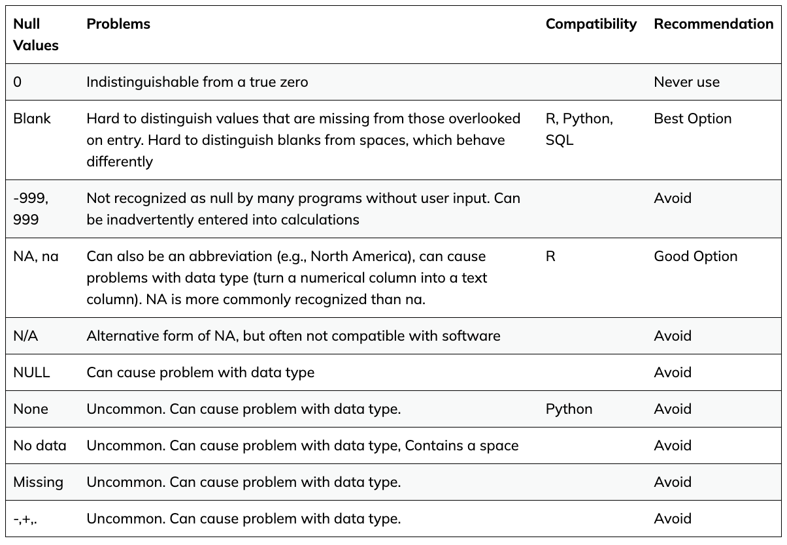

Organisation and tidy data
Good data organisation is the foundation of any research project. It not only sets you up well for an analysis, but it also makes it easier to come back to the project later and share with collaborators, including your most important collaborator - future you.
Organising a project that includes sequencing involves many components. There’s the experimental setup and conditions metadata, measurements of experimental parameters, sequencing preparation and sample information, the sequences themselves and the files and workflow of any bioinformatics analysis. So much of the information of a sequencing project is digital, and we need to keep track of our digital records in the same way we have a lab notebook and sample freezer. In this lesson, we’ll go through the project organisation and documentation that will make an efficient bioinformatics workflow possible. Not only will this make you a more effective bioinformatics researcher, it also prepares your data and project for publication, as grant agencies and publishers increasingly require this information.
Metadata
When we think about the data for a sequencing project, we often start by thinking about the sequencing data that we get back from the sequencing centre. However, equally or more important is the data you’ve generated about the sequences before it ever goes to the sequencing centre. This is the data about the data, often called the metadata. Without the information about what you sequenced, the sequence data itself is useless.
Structuring data in spreadsheets
Regardless of the type of data you’re collecting, there are standard ways to enter that data into the spreadsheet to make it easier to analyse later. We often enter data in a way that makes it easy for us as humans to read and work with it, because we’re human! Computers need data structured in a way that they can use it. So to use this data in a computational workflow, we need to think like computers when we use spreadsheets.
The cardinal rules of using spreadsheet programs for data:
- Leave the raw data raw - do not change it!
- Put each observation or sample in its own row.
- Put all your variables in columns - the thing that vary between samples, like ‘strain’ or ‘DNA-concentration’.
- Have column names be explanatory, but without spaces. Use ‘-’, ’_’ or camel case instead of a space. For instance ‘library-prep-method’ or ‘LibraryPrep’is better than ’library preparation method’ or ‘prep’, because computers interpret spaces in particular ways.
- Do not combine multiple pieces of information in one cell. Sometimes it just seems like one thing, but think if that’s the only way you’ll want to be able to use or sort that data. For example, instead of having a column with species and strain name (e.g. E. coli K12) you would have one column with the species name (E. coli) and another with the strain name (K12). Depending on the type of analysis you want to do, you may even separate the genus and species names into distinct columns.
- Export the cleaned data to a text-based format like CSV (comma-separated values) format. This ensures that anyone can use the data, and is required by most data repositories.

Above is some potential spreadsheet data generated about a sequencing experiment.
Discuss some of the problems with the spreadsheet data shown above. You can look at the image, or download the file to your computer via this link and open it in Excel.
Here is a clean version of the data (download link here). Note the following changes to make the data tidy:
- Sections reordered to be in single columns
- Removed formatting/colours which won’t be interpreted by most computational tools
- Header information about the reference, facility, read length etc moved to their own columns
- Spaces replaced in column names with _
- Standarised language for mutator and cit columns i.e.,
"+"becameplus
- Data has also been saved as a tsv file rather than excel format.

Tidy data principles
Best ways to name columns:

Be careful of zero values versus missing values:
